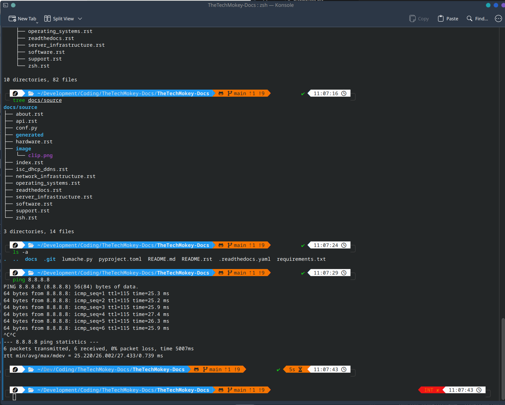

Installing Zsh and Oh My Zsh
This guide will walk you through installing Zsh, Oh My Zsh, and some useful plugins to enhance your terminal experience.
{kind=link}
Dependencies
Git
Curl
If you don’t have a preferred text editor installed, you can install one with the following command:
sudo dnf install nano
1. Install Zsh
Ubuntu
To install Zsh on Ubuntu:
sudo apt install zsh
Fedora/CentOS
To install Zsh on Fedora/CentOS:
sudo dnf install zsh
2. Install Oh My Zsh
Run the following command to install Oh My Zsh:
curl -fsSL https://raw.githubusercontent.com/robbyrussell/oh-my-zsh/master/tools/install.sh | sh
zsh
3. Change Default Shell
To change the default shell to Zsh, use the following command, replacing <USERNAME> with your actual username:
sudo usermod --shell $(which zsh) <USERNAME>
4. Add Plugins
Edit your Zsh configuration file to add plugins:
nano ~/.zshrc
Find the line starting with plugins=( and update it as follows:
# Which plugins would you like to load?
# Standard plugins can be found in $ZSH/plugins/
# Custom plugins may be added to $ZSH_CUSTOM/plugins/
# Example format: plugins=(rails git textmate ruby lighthouse)
# Add wisely, as too many plugins slow down shell startup.
plugins=(
git
dnf # OR apt, depending on your system
)
5. Syntax Highlighting
Install the Syntax Highlighting plugin:
git clone https://github.com/zsh-users/zsh-syntax-highlighting.git ${ZSH_CUSTOM:-~/.oh-my-zsh/custom}/plugins/zsh-syntax-highlighting
Add the plugin to your .zshrc:
nano ~/.zshrc
Update the plugins line to include zsh-syntax-highlighting:
plugins=(
...
zsh-syntax-highlighting
...
)
6. Auto Suggestions
Install the Auto Suggestions plugin:
git clone https://github.com/zsh-users/zsh-autosuggestions ${ZSH_CUSTOM:-~/.oh-my-zsh/custom}/plugins/zsh-autosuggestions
Add the plugin to your .zshrc:
nano ~/.zshrc
Update the plugins line to include zsh-autosuggestions:
plugins=(
...
zsh-autosuggestions
...
)
7. Fuzzy Finder
Install Fuzzy Finder (fzf):
git clone --depth 1 https://github.com/junegunn/fzf.git ~/.fzf
~/.fzf/install
Answer yes to all prompts during the installation.
8. Time to Prettyfi
Install Nerd Fonts
Create a fonts directory and download the Meslo font:
mkdir ~/.fonts && cd ~/.fonts
wget https://github.com/ryanoasis/nerd-fonts/releases/download/v3.2.1/Meslo.zip
Unzip the font files:
unzip Meslo.zip
Clean up by removing the zip file:
rm -rf Meslo.zip
Change the font preference in your text editor to use the Meslo Nerd Font.
Install Powerlevel10k
Clone the Powerlevel10k theme:
git clone --depth=1 https://github.com/romkatv/powerlevel10k.git ~/powerlevel10k
echo 'source ~/powerlevel10k/powerlevel10k.zsh-theme' >>~/.zshrc
Restart Zsh to apply the changes:
exec zsh
If this doesn’t trigger the Powerlevel10k setup, you can run:
p10k configure
To reconfigure Powerlevel10k at any time, just run the above command.